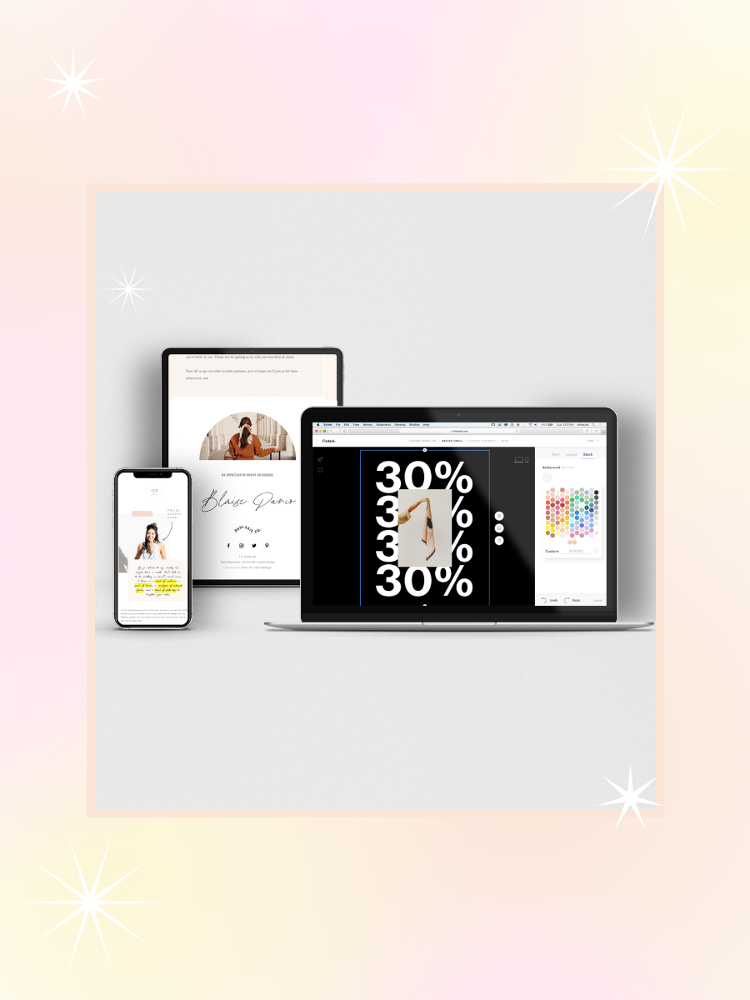

Flodesk — Email Marketing Platform
Engineering Manager / Senior QA Engineer / QA Lead / Delivery Manager | 2020 — 2025 | Danang, Vietnam
Flodesk is a design-focused email marketing platform enabling small businesses to grow through email-driven marketing.
Key Achievements:
- Led 20 software engineers across 6 parallel workstreams, improving delivery predictability and sustaining high availability for 500K users
- Owned delivery planning and execution across cross-department initiatives, contributing to the acquisition of 30K paid members
- Drove test automation for 80% of core product flows using Playwright, reducing regression testing time by ~70%
- Built data quality dashboard to track defect insights, improving defect resolution time and increasing customer satisfaction by 20%
- Introduced performance and score-tracking frameworks, improving team motivation, accountability, and job satisfaction
PlaywrightQuality DashboardsAgile/ScrumTeam LeadershipClickUp